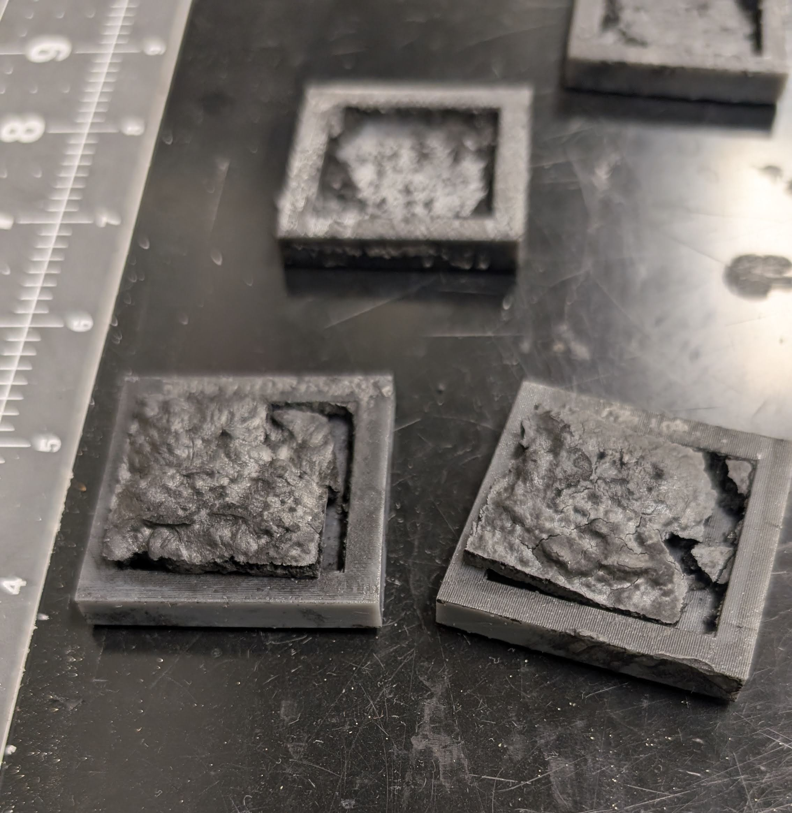

01 — ENERGY STORAGE
Lithium-Sulfur Battery Research
Investigated lower-cost cathode materials for lithium-sulfur cells and evaluated their electrochemical performance through controlled testing under Dr. Sheldon Shi at the University of North Texas.
Overview
I research lithium-sulfur batteries in Dr. Shi's lab at UNT, focusing on fabricating biomass-based cathodes. Lithium-sulfur batteries have the capability to hold 5x the energy of lithium-ion batteries, but they are limited by the cycle stability and environmental impact.
My Contribution
I specialize in formulating mixtures for testing and assisting in materials science formulation tests, including BET, SEM, and DSC. I presented my research at the Society of Plastic Engineers International Polyolefins Conference in February of 2026 and am now working on review papers and a research publication.
PHOTO DOCUMENTATION
Lab work and cell assembly



VIDEO
Testing walkthrough
Placeholder video path — add Assets/Videos/battery-research/lab-walkthrough.mp4 to enable playback.
TECHNICAL NOTES
Methods and equipment
- Industrial blender to process hemp bast fibers
- Cathode material preparation and slurry casting
- Direct Ink Writing (DIW) printing
- Cycling tests at an external laboratory